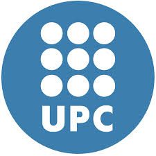
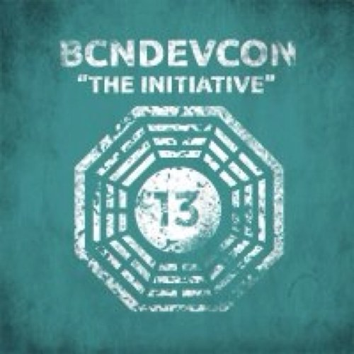

A raíz de la lectura de The Phoenix Project (del cual hicimos una reseña) buscamos más información sobre Las Tres Vías (The Three Ways) y fuimos a dar con un post de Gene Kim (co-autor del libro) donde hace una breve introducción a estas.
A continuación adjuntamos una traducción del post (podéis encontrar el post original aquí).
Leer más…
Comentarios

Era de esperar que en algún momento apareciera, desde el mundo universitario, formación sobre el tema DevOps, o que la incluya. Así pues, llega el curso de formación contínua Agile IT Management: Scrum, DevOps, Lean IT, ofrecido por BarcelonaTech.
Este curso incluye la práctica con ciertas herramientas relacionas, entre ellas Jenkins, Puppet, o Amazon WS. De todos modos, no olvida la interacción con las metodología ágiles y los conceptos de lean aplicados a entornos de las TIC.
Leer más…

El tercer día de la BcnDevCon13 fue bastante más relajado que los otros dos. No en vano fue domingo. Las visitas al salón de RetroBarcelona se mantuvieron bastante activas. Las actividades sobre robótica, como el AESS Challenge también tuvieron bastante afluencia. La Agile Station tuvo actividad, pero tuvieron que cancelar alguna actividad debido a la baja afluencia. No obstante, su taller de robótica infantil pareció tener cierto éxito.
Leer más…

El pasado jueves, día 7 de noviembre, Amazon WS anunció que su servicio ELB pasaría a permitir balancear entre instancias que se encontraran en zonas de disponibilidad distintas, mejorando el mantenimiento y rendimiento de las aplicaciones, que ya no requerirán esfuerzos adicionales por parte de los clientes. También hará el despliegue de las aplicaciones más sencillo.
Leer más…
Comentarios